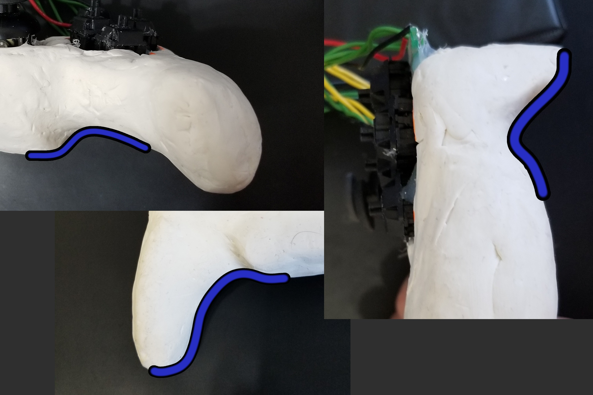

For my CET final senior project, two of my friends and I created a USB game controller. We came up with this idea by
combining and refining our original capstone project ideas. On our team, I was our scrum master, programmer, and
final assembler. Paul (my friend) was in charge of Circuitry, Soldering, and designing the PCB. Nathan (my friend)
was in charge of 3D modeling and sculpting.
This project also required us to write a paper detailing every task and decision (8000 words), our scrum minutes (4
weeks of daily journals), Our milestones and timeline,and a Kanban chart . For this project we had to do 3
presentation, one to our teachers, a public showcase set up in the atrium of
NSCC IT campus, and a public showcase setup at NSCC Ivany campus.
Our goal was to create a USB game controller for PC. This game controller has feel and build quality as it's
number one priority. Being sturdy, tough, have a comfortable grip, balanced weighting, nice texture, satisfying
and low-delay key presses, key mapping. An overall high-quality product.
We wanted to design the controller in a way that will allow it to be produced. This means having Schematic and
Gerber files that could be used to manufacture a PCB and having a detailed 3D model that can be used on CNC
machines.
To achieve comfort, we plan on carefully sculpting a handle and body that will hug the hand and provide a shape
that distributes the weight. We want to find a shape that gives the best feel for the most amount of grip styles
and hand sizes.
To achieve sturdiness and texture we plan on carving a 3D model based on the sculpture out of wood and sanding it
to perfection. The wooden chassis should have just enough room inside to fit the components, making is feel
solid.
To achieve satisfying key presses, we plan to do something no commercial game controller has done before and use
Mechanical key switches (designed for keyboards) they offer a better feel then the typical rubber dome buttons.
We plan on customizing the keycaps for easier glide (sliding fingers between buttons) and reducing height.
To achieve key mapping, we plan on having a companion software written in C99 that can detected the attached
controller and offer a (graphical) user interface that can change what input is sent when a button is
pushed.
We also plan on having a rumble motor for providing feedback
When first starting this project, we didn’t have the embedded controller, analog sticks, or key switches we
wanted to use. Our first prototype is made from various scrap parts, an Arduino Leonardo, and the clay model we
used to sculpt the exact feel we wanted.
The clay model was mainly sculpted by Nathan, but we all played a big part in its design. We wanted the shape of
the clay model to be the shape of the final product, so we put a lot of time and effort into it. We used other
companies’ controllers (Nintendo, Sony, Xbox, Logitech) as a starting point for designs and sizes. Then we drew
designs and layouts that would be comfortable size and comfortable positioning, then we refined those drawings
into something we were all happy with.
When we had a pretty good idea of the basic shape, Nathan formed the clay into that design were we could continue
refining the shape. We shaped out curves, get everyone’s feed back and refine the shape. We strived to get a
shape that, no matter the grip style or size of hand your fingers wouldn’t be cramped or feel out of place. We
also paid attention to weight and weight distribution. We noticed when the top is heavier it feels like it’s
coming out of your hand, where if the bottom is slightly heavier you hold the controller closer to yourself
which is usually more comfortable. (and if it’s too heavy you’ll get tired)
Nathan took many pictures (both close and far to account for lens distortion) and measures all the angles and
dimensions to prepare for 3d modeling it.

My big contribution to the shape was the handle. I noticed that with hands the palm flexes slightly then the
fingers wrap, and as the fingers wrap there is less of a gap (between fingertip and palm) so I designed a handle
the had a meatier palm side, and the finger side tapered from the palm side to where the fingers would touch the
palm. My initial sculpt of this was very personalized to my own hand, but though many revisions we made it a
better shape that would give the same feel to as many hand shapes as we could get it.
Still without the supplys we needed our teachers pushed us to use the clay model, and other parts in the lab to
make the first prototype. This turned out disastrous, it did work, but it looks awful. I got a Arduino Leonardo
and used https://github.com/MHeironimus/ArduinoJoystickLibrary/tree/version-2.0 to setup the Leo as a
controller. The problem came with the buttons, the key switches we found didn’t fit any perf-board we found, so
we had to manually drill holes on an already perforated board. We also couldn’t find 2 of the same analog
sticks, the ones we did find fully broke after a few days. On top of all that, the clay model was meant to be a
reference for the chassis, meaning the chassis would be nearly hollow and shaped like the clay. We had to glue
the random components on top of the clay.
It did function as a controller until it broke. prototype 2 went a lot better
When the embedded controller we ordered (Teensy 3.2 which has its only input device library) finally arrived we
only had 2 weeks left. The first obstacle I ran into was that the number that corresponded to the controller
input (Teensy’s button 1 wasn’t the same as the Leonardo’s button 1, and also wasn’t the same as the Teensy’s
documentation) This meant that I had to map out ever output though trial and error, the problem here is finding
something that could read the control and give me feedback. Most programs, including the windows included one
only give back a number to tell what button was pushed (which doesn’t help) and programs that gave a the symbol
of the button pushed (a,b,x,y or x,o,triangle,square) were inconsistent.
My solution was to brute force check each button output by loading a game up and pressing the button in game to
see what it did, then looked up the key bindings. I also found a commercial USB controller that I used with
input sensing programs to confirm results. I made diagrams to help both me and Paul who was doing the schematic
and needed the pinouts.
This brings me to the next thing I did, which was optimize which of the Teensy’s pins should connect to which
buttons/analog sticks to have the minimal overlapping wires, minimum length wires, and only certain pins allowed
analog input.
The coding was pretty simple except the Hat switch. The hat switch or D-pad of our controller is 4 independent
buttons, and the output the computer (the Teensy library in this case) is looking for is a number is degree from
0-360 in 45 degree increments. My first iteration was just 9 if statements, each with 4 checks for the buttons
state.
This didn’t look like the most optimal way to solve the problem. I spent some time trying to add an equation that
could reduce the load of if statements. I created a program in C that would take my computers time, run a
function, then take the time again to get the length of time the function is running for. Because the code is
only a few ifs I had to run the function 1 million times to have it affect the milliseconds. Then I ran that 100
000 times and took the average length to get a high confidence level in the amount of time the function
took.
As im writing this I noticed a flaw in the original code, I was hardcoding numbers into the If statements to act
as checks. ((1+1 > 0) && (2+2 > 0) && (3+3 > 0) && (4+4>0)) is the exact same as (1). The problem with this is
that it is solved at the compiler level, not at runtime when I thought it would be. Just now (October 2019) I
have recreated these tests and putting both those ‘equations’ in results in the same time. I have retested the
Hat switch code (my new and old) using variables to make up the statements and the times are both much longer.
My old findings shown that across the board my new code was better, this a false, my new findings show that the
route were the fewest amount of if statements are hit their times are close but the if chain with 4 checks is a
bit faster, however the path that takes the longest amount of IFs shows that the equation based one is quite a
bit faster.
The improved hat switch code I had written was more consistent (which is something we were looking for) but it
was originally based on false numbers.
With the program finished (not as many features as we planned for, but complete) I focused on the final assembly.
Nathan created a 3D printed basic shaped chassis because the 3D replica of the clay model has not been finished.
With only 1 week left there was not enough time to order Paul’s circuit board, so I had to make do.
While Nathan was 3D printing, Paul and I created small boards to mount the Cherry mx black mechanical key
switches so we could get the perfect positioning once assembled. We also extending the leads of the high quality
analog sticks (metal internals where prototype 1’s was plastic). I shaped a piece of wood so that it would fit
into the printed chassis, then carved out areas and groves for the components and wires.
The final step was for Nathan to create and print a face plate for the controller. One final addition I made was
to hand sand down the key caps. Keys are normally square with a raised edge, this makes it hard to glide your
finger from one button to another, a necessary feature of controllers. I removed this and added it in the
opposite for the sides close to each other.
The controller functions as a windows recognised generic controller device, able to be read by applications. The
only functionality missing in this area is key-mapping software.
Our Controller has a 3d printed fully enclosed chassis. It is not the shape, nor the material we had planned from
the start. Overall it has a feel that is not the best, which would be improved by having the shape of the clay
model we sculpted.
The mounting board was hand carved from a piece of wood to secure all our components at the correct dimensions. A
PCB would have been optimal, but time did not allow it.
For buttons we had hand smoothed, cherry mx black mechanical key switches arranged in a square pattern. This was
equivalent to our goal, having them mounted on a PCB would be ideal, but the current state is up to par.
Because we did not want to sacrifice build quality anywhere we could, we ended up sacrificing features to give us
more time to perfect the features we did have. Features common among controller such as vibration, LED
indicators, were sacrificed early on. The Idea of remappable buttons though a companion program was sacrificed
for the same reasoning.
Critical controller features such as trigger, bumper, and home button(xbox) were sacrificed when we ran into
issues with spacing. They were left out because we theorized that the time it would take to accommodate those
buttons would prevent us from doing tasks that the product needed to be demonstrated as a functioning
controller.
With the goal of this project to have a high quality controller, how users feel when using the controller is the
most important metric. We used the 2 showcases not as a way to show off project but to get a large sample size
of user’s feedback.
The day before the showcase I let my roommate test out the controller, he had the same feedback as most did.
After asking him for feedback he use the controller for another 6 Hours straight. I asked him why and he said he
liked the game (Jet Set Radio) and the controller, but after a while the shape (3d printed chassis) hurt his
hand. Weeks after the showcase he asked me if the controller was still around.
We used the game Portal 2 during our showcase, because it was a First person game rated E 10+ and required both
analog sticks and a variety of buttons to play. Another game we used was TouHou, which is a Bullet Hell style
game that requires precise control and quick reaction times.
The feedback received was surprisingly consistent considering the amount of people we talked to. Each showcase
lasted something like 6 hours (maybe 8) and there was almost always someone at our booth.
The first thing (75% of) people would point out is the lack of trigger buttons on the top of the controller, this
was an issue we had internally debated, with the printed chassis, and wooded backboard, and amount of time we
had, adding triggers would have been impossible.
The first thing I would notice people reacting to (before they tried to press non-existent triggers) was the way
they picked up and held the 3D printed chassis. (about half would mention it before we did) This was something
we debated about 2 weeks before. The digital 3d model of the clay would not be ready in time to carve or print,
so we focused on a less ideal easier to model shape.
After a few seconds of playing, or when a person asks/shows interest we would tell them about the mechanical key
switches. Universally people (both young kids and older adults) loved the idea and feel, talking about how good
they felt for the rest of the time at the booth.
After talking about our design and goals, we would get there opinion on the feel and shape of the clay model.
This also had universal praise, many different people all holding it differently with different hand sizes.
We got lots of positive feedback, and a few people actively wanting to buy our next iteration of the controller.
(and one person wanted to buy our current prototype). Any negative feedback we got were all things we had been
aware of. Our observations of how people used and held the two prototypes are in line with this same
feedback.
All files are stored on our projects GitHub. The "Project Management" directory has our assignments and
documents